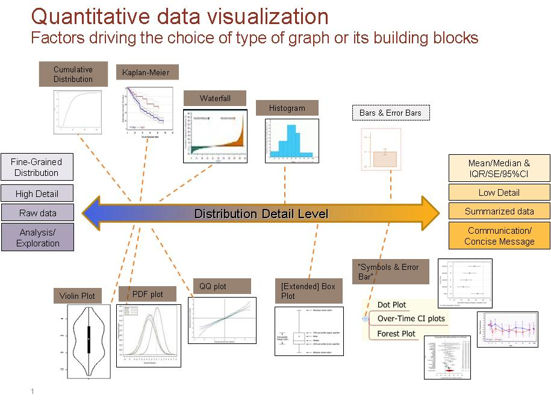

Need Help Selecting a Graphic?
Return to Statistical Graphics Home
Click here to open Flow Chart with direct links
Links:
Cumulative Distribution
NEED: Profile Plot or Step Plot
Waterfall Graphics
Basic Histogram
Violin Plot
PDF Plot
QQ Plot
(Extended) Box Plot
Flow Chart as jpg:
